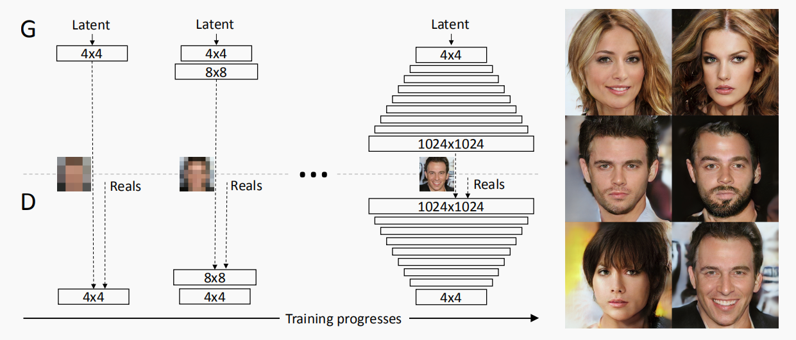
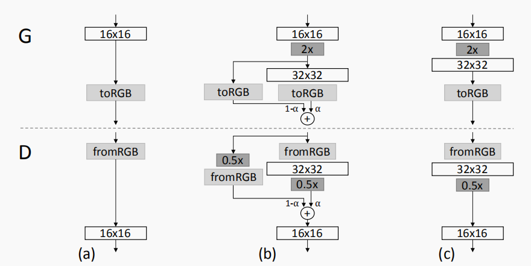
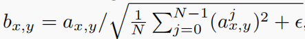

渐进的生成一张高清大图片
\(StyleGAN\)的论文初看感觉十分难懂，但\(latent~code\)又是一项十分重要的技术，毕竟生成的高清大图十分诱人，因此必须要啃下这块硬骨头。为了搞懂\(StyleGAN\)的论文，我认为也有必要了解一下它的前作\(PGGAN\)。这篇笔记中会重点关注二者之间思路的关联与共性的技巧。
\(PGGAN\)是一种\(unconditional~GAN\)，可以从零开始生成\(1024*1024\)分辨率的高清大图。传统\(GAN\)一般都是在小图片上面做实验，比如\(256*256\)分辨率，这就导致了\(GAN\)难以商业化。生成大图片是一个具有挑战性的任务，不仅仅是收集一个高清数据集，把模型重跑一遍调调参数的问题。对于生成器来说，生成一张大图比小图更容易出现瑕疵；对于判别器来说，从高分辨率的大图上也更容易看到瑕疵。这就导致了二者训练难度不平等的问题。
为了解决生成大图片的难题，作者提出了渐进式训练的思路：先在小图片上训练，然后同步加深网络层，提高分辨率。这个思路能\(work\)是有原因的。对于一般\(GAN\)生成器中的\(decoder\)，一些可视化技术（如\(GANDissection\)）表明，在靠前的低分辨率的网络层，生成器主要生成轮廓，颜色等粗糙的特征，而在靠后的高分辨率的网络层，生成器会给图像添加细节。 采用渐进式训练思路，可以让生成器在有了轮廓的基础上，去重点学习如何生成细节；而普通的生成器既要学习轮廓，又要学习添加细节。
整个\(PGGAN\)的结构看下面这张图就很清楚了。随着分辨率的提高，网络变得越来越深；另一方面，随着像素的提高，可以看到生成图片是一个从轮廓到细节的过程。有了轮廓的保证，细节的学习变得更稳定。实验还表明，\(PGGAN\)的训练速度比常规\(GAN\)更快，这是由于人工的拆解了训练过程，在学习轮廓等粗糙特征时，网络浅，参数少；在学习细节时，有了轮廓的保证，收敛更快。

上图有一点没有说清楚，就是在提升分辨率时的操作细节。主要有下面两点：
最后再来介绍一下\(PGGAN\)训练的其它\(tricks\)，因为\(StyleGAN\)也继承了这些想法：
这么做也是为了防止梯度更新过猛。还有一个额外的好处，将最终的输出卡在\([-1,1]\)的范围内。另外，\(PGGAN\)没有使用任何\(BN,dropout\)层。